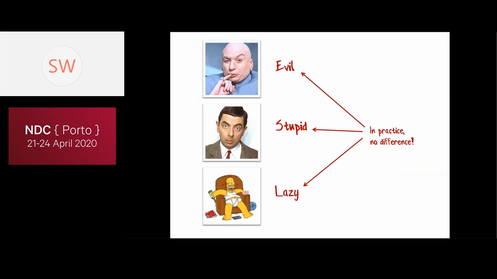
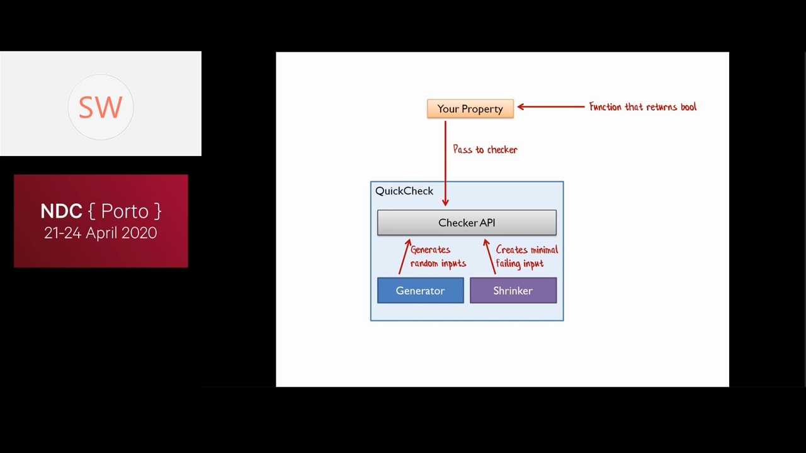
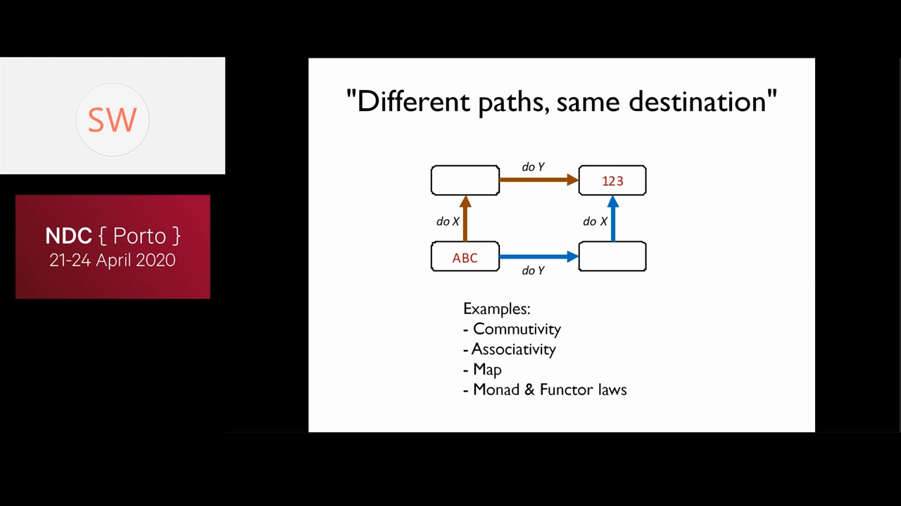
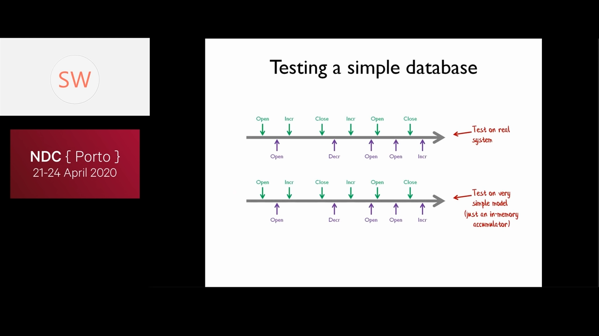
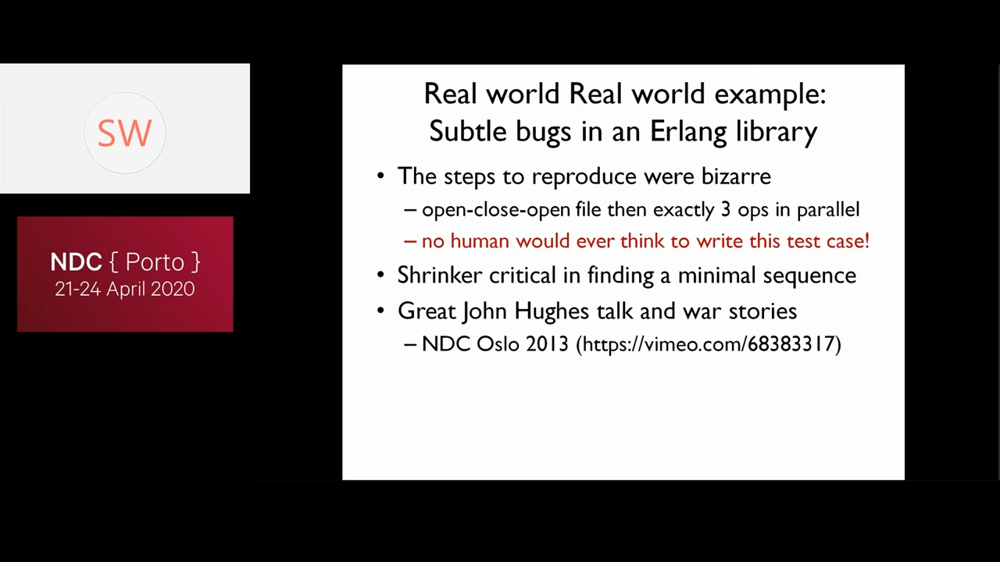
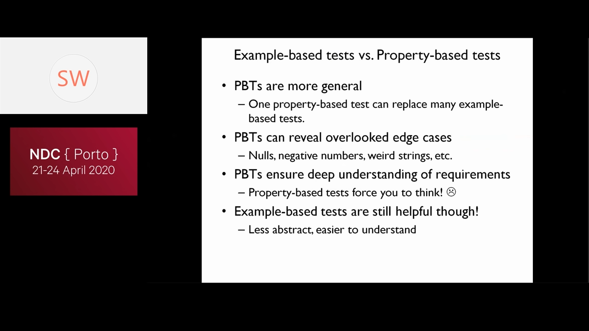

Property Based Testing
Table of Contents
0:02:42 How do you that you have enough tests.
0:05:40 Bad Idea: (side effect of TDD) Write only enough ode to make the failing unit test pass.
0:07:20 Don't use specific examples!
0:09:54 Test for Properties
- e.g. commutability with addition
- check for associativity
- x+ 1 + 1 = x + 2
- 0:13:56 check for trivial input. x+ 0 = x

0:20:25 Evil = Stupid = Lazy Programmer. Test save us from them.
1. Quick Check

- 0:26:17 It generates examples
- Int generator
- string generator
- Comopund type generator
0:29:56 Shrinker changes inputs to find the smallest input that fails.
1.1. 0:30:22 How to choose Properties
- 0:30:49 Different Paths Same Desitination

- 0:33:50 There and back again
- do something, and do the inverse.
- e.g. to test list.reverse, reverse it twice. It should give you the same result.
- 0:35:12 Some things never change
- e.g. for transform
- size, (for map, reverse)
- contents (reverse)
- balanced tree (add, remove, … => the tree remains balanced)
- e.g. for transform
- 0:37:34 The more things change, the more they stay the same
- e.g. for List.distinct doing it twice is same as doing it once
- i.e. Idempotence holds for
- sort
- filter
- event processing (?)0:37:59
- 0:38:15 Solve a smaller problem first
- for divide and conqure algorithms
- for structural induction (?)
- 0:39:10 Hard to prove, easy to verify. e.g.
- maze solving
- prime factorization
- input -> split -> join -> input
- 0:40:45 To check parser; Parse and create parse tree, then generate the source code. Check if they are same
- 0:41:33 sort
- 0:42:20 The test oracle: check the results of a system under test with the 'Test Oracle' which gives right answer
- optimized version vs brute-force version
- Parallel version vs single thread version
- Legacy version vs Replacement version
1.2. Model Based testing
i.e. Using test oracle appraoch for complex implementations
1.2.1. e.g. Testing a simple database

- Test on real system vs Test on a very simple model
1.3. Real world Example

- The steps to reproduce were bizarre
- open-close-open file then exactly 3 ops in parallel
- no human would ever think to write this test case!
- Shrinker critical in finding a minimal
- Great John Hughes talk and war stories
- NDC Oslo 2013 (https://vimeo.com/683833 17)
1.4. Property-based tests vs Example-based tests

- PBTs are more general : One property-based test can replace many example-based tests.
- PBTs can reveal overlooked edge cases: Nulls, negative numbers, weird strings, etc.
- PBTs ensure deep understanding of requirements : Property-based tests force you to think!
Example-based tests are still helpful though
- Less abstract, easier to understand
1.5. Resources
- Search for PBT and $YourLanguage
- Real world examples:
+John Hughes talks (vimeo.com/68383317)
- "Property-Based Testing in a Screencast Editor" by Oskar Wickstrom
- "Metamorphic Testing" by Hillel Wayne